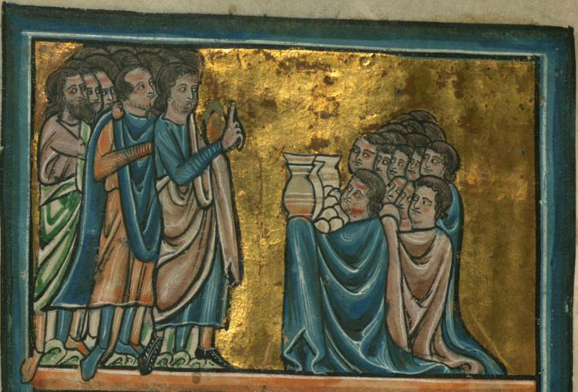

Josué 9 — La Traducción Mister

La mitad superior de una hoja del mismo libro de estampas de Oxford que el frontispicio de Josué 7: esta página es el reverso de aquella, y su escena inferior, recortada aquí, es la del capítulo siguiente, los cinco reyes marchando contra Gabaón. De Brailes les da a los gabaonitas lo que pidieron, una audiencia de rodillas, y las pruebas que trajeron: unas jarras en alto y un montón de panes redondos. No les da el disfraz. Las ropas están enteras y vivas, nada está remendado, los odres de los vv4 y 13 se han vuelto cerámica, y no hay asnos: el pintor muestra el momento del trato y no el disfraz que lo ganó. La figura de pie que alza dos dedos hace el gesto de hablar, o de jurar; el capítulo tiene las dos cosas en el v15. Tinta y pigmento sobre pergamino, la página del tamaño de una mano; el Walters Art Museum liberó la imagen al dominio público.
_-_Walters_W10619V_-_Full_Page.jpg){kind=link}
★★★ Los reyes que se reúnen son el heteo, el amorreo, el cananeo, el ferezeo, el heveo y el jebuseo: las mismas seis naciones, en el mismo orden, que Deuteronomio 20:17 (ya en estas páginas) nombra en la ley del anatema. La frase justo anterior a esa lista es aquella sobre la que gira todo este capítulo: de las ciudades de estos pueblos … no dejarás con vida nada que respire (20:16). Y la frase anterior a ESA es la excepción: así harás a todas las ciudades que están muy lejos de ti (20:15). Los reyes de las seis se reúnen para pelear. Una ciudad hevea está a punto de responder a la misma noticia al revés: diciendo que vive muy lejos.
★★ «Al otro lado del Jordán» es la orilla oeste en el v1 y la orilla este en el v10, y el hebreo son las mismas dos palabras las dos veces, be’éver ha-Yardén. La frase nombra la orilla que queda enfrente de quien habla, y nada en el v1 dice cuál; Josué 5:1 (ya en estas páginas) tuvo que añadir hacia el oeste para que apuntara al oeste. La ASV y la Douay-Rheims mantienen la frase idéntica en los dos versículos, ‘beyond the Jordan’, y también la Geneva, ‘beyond Jordan’. La RV60 lee «a este lado del Jordán» en el v1 y «al otro lado del Jordán» en el v10; la NVI, «en el lado occidental del Jordán» y luego «al este del Jordán»; la TNM, «del lado del Jordán» y luego «al otro lado del Jordán». Cada una de esas tres es una lectura correcta de la geografía, y cada una oculta que el texto usa una sola frase para dos orillas opuestas.
★ Se reúnen pe ejad, «una sola boca». La frase está en tres versículos de la Biblia hebrea: este, y los dos relatos gemelos de cuatrocientos profetas que le dicen a un rey lo que quiere oír con una sola boca (1 Reyes 22:13; 2 Crónicas 18:12, ninguno todavía en estas páginas). La RV 1909 lee «á una, de un acuerdo», la TNM «unánimemente»; la RV60 omite la frase. Esta traducción conserva la boca, porque el capítulo tiene otra esperando en el v14.
★★★ El texto masorético cierra el v2 con un salto abierto, {פ}, y el Josué griego mete ahí una escena entera. En la Septuaginta el altar del monte Ebal y la lectura de la ley —Josué 8:30–35 (ya en estas páginas)— vienen aquí, entre la reunión de los reyes y la delegación de Gabaón, y no al final de la campaña de Hai. Un rollo del mar Muerto de Josué, 4QJosa (4Q47), pone los dos últimos versículos de esa escena, 8:34–35, en otro lugar todavía: al abrir el capítulo 5, justo después del cruce del Jordán y antes de la circuncisión en Gilgal. Tres testigos antiguos, tres posiciones para la misma ceremonia. Esta traducción conserva el orden masorético e informa de los otros dos.
★★★ Be’ormá, «con astucia», está exactamente en dos versículos de la Biblia hebrea. El otro es Éxodo 21:14 (ya en estas páginas): si alguno se ensoberbece contra su prójimo, para matarlo con alevosía, de mi altar lo tomarás para que muera; la «alevosía» de allí es esta misma palabra. En la ley, la astucia pierde la protección del altar. En este capítulo, la astucia termina en el v27 con los gabaonitas sirviendo en el altar para siempre. Véase ormá: el sustantivo está en cinco versículos, los otros tres en Proverbios, donde la Sabiduría se la ofrece a los ingenuos y vive con ella, y su raíz es la de la serpiente, arum, «astuta», en Génesis 3:1 (ya en estas páginas, todavía no en español).
★★ «También ellos» —gam-hemmá— no dice también como quién. La astucia más cercana del libro es la propia emboscada de Israel en Hai, todo el capítulo anterior; el oír más cercano es el de los reyes del v1, que oyeron la misma noticia y echaron mano de las armas. Las dos lecturas se sostienen. La RV 1909 conserva la palabra, «Ellos usaron también de astucia», y la RV60 la deja caer, «usaron de astucia»; en inglés la ASV la conserva, ‘they also did work wilily’, y la KJV la deja caer, ‘They did work wilily’; la TNM convierte la comparación en independencia, «aun de su propia cuenta».
★★★ Emisarios o provisiones: el verbo que dice lo que hicieron está a una letra de otro verbo, y el estante se divide exactamente sobre esa letra. El masorético vayyitstayyaru, de tsir, emisario, significa «se hicieron emisarios», una forma que está en este versículo y en ningún otro. Cámbiese su resh por una dálet, dos letras fáciles de confundir en la escritura cuadrada hebrea, y se vuelve vayyitstayyadu, «se abastecieron»: el verbo que los propios gabaonitas usan en el v12, hitstayyadnu, «lo cargamos como provisión». La propia nota al pie de la NIV nombra los testigos de esa lectura —‘some Hebrew manuscripts, Vulgate and Syriac (see also Septuagint)’—, y el Josué griego, en efecto, hace que los gabaonitas se provean y se preparen. La RV 1909 sigue la letra masorética, «fingiéronse embajadores», y la RV60 también, «se fingieron embajadores», como la ASV y la KJV, ‘made as if they had been ambassadors’, y la Geneva, ‘feigned themselves ambassadors’; la NVI lee «Enviaron mensajeros». La TNM lee «se abastecieron de provisiones» y la Douay-Rheims ‘took for themselves provisions’: la Douay porque traduce la Vulgata; la TNM, como su original inglés, la NWT 1984, escoge aquí la variante. Esta traducción conserva la resh masorética, como conserva toda lectura masorética, y pone la variante aquí.
★★★ El disfraz está hecho con una frase que Moisés dijo de la ropa del propio Israel. Deuteronomio 29:4 (ya en estas páginas; 29:5 en la mayoría de las Biblias en español): los llevé cuarenta años por el desierto; sus vestidos no se gastaron sobre ustedes, ni tu sandalia se gastó sobre tu pie —salmot, na’al, balá. El disfraz de los gabaonitas son esas tres palabras sin la negación: sandalias gastadas … ropas gastadas en el v5, y en el v13, en su propia boca, estas ropas nuestras y nuestras sandalias se han gastado. El verbo aparece cinco veces en los vv4, 5 y 13, sobre sacos, odres, sandalias y ropas. Israel anduvo cuarenta años sin gastar una sandalia; los gabaonitas, de unas ciudades a las que el ejército de Israel llega al tercer día (v17), muestran sandalias gastadas como prueba de distancia.
★★ Niqqudim: ¿desmenuzado, o manchado de moho? Las consonantes son las que hacen «salpicados» los rebaños de Jacob en Génesis 30:32 y 39 (ya en estas páginas, todavía no en español), y esa es la raíz más probable de «mohoso»: pan que se ha llenado de manchas. Pero como palabra para pan está en tres versículos, y el tercero, 1 Reyes 14:3 (todavía no en estas páginas), hace que la mujer de Jeroboam lleve diez panes, y niqqudim, y una vasija de miel: algo horneado y seco, galletas o tortas que se deshacen. Así que es migas o manchas, y el estante se divide limpiamente. La RV60 lee «seco y mohoso», como la RV 1909, «seco y mohoso», y la KJV, ‘dry and mouldy’; la NVI lee «duro y hecho migas», la TNM «seco y desmigajado» y la Douay-Rheims ‘hard, and broken into pieces’. Esta traducción lee «desmenuzado», siguiendo el otro lugar donde la palabra es comida, y deja aquí el sentido de «salpicado». Véase niqqudim.
★ En los vv12–13 el atrezo se vuelve testimonio. Este pan nuestro … estos odres … estas ropas: tres demostrativos, cada uno señalando una prueba. El pan estaba caliente, los odres eran nuevos, y el camino fue muy largo: el mismo me’od, «muy», que añaden a lejos en el v9 y el v22.
★★★ Los gabaonitas dicen, casi palabra por palabra, lo único que los pondría bajo la ley de Deuteronomio 20 para las ciudades lejanas en vez de su ley para estas naciones. Deuteronomio 20:10–11 (ya en estas páginas): a una ciudad le proclamarás paz, y si responde en paz, todo el pueblo que se halle en ella te será para trabajo forzado, y te servirán; y el 20:15 lo limita a las ciudades que están muy lejos de ti. En el v22 Josué les devuelve su propia mentira: Estamos muy lejos de vosotros, rejoqim … me’od, el adverbio del 20:15. De hecho son de «estas naciones»: el v7 los llama heveos, el quinto nombre de la lista de 20:17.
★★ Me’érets rejoqá, «de una tierra lejana», está en siete versículos de la Biblia hebrea, y en dos de los otros también hay emisarios. Aparte del v6 y el v9 de este capítulo, es el extranjero de Deuteronomio 29:21 (ya en estas páginas); el extranjero de la oración de Salomón, contada dos veces (1 Reyes 8:41; 2 Crónicas 6:32); y la delegación babilónica ante Ezequías, también contada dos veces: ¿de dónde vinieron estos hombres? … de una tierra lejana, de Babilonia (2 Reyes 20:14; Isaías 39:3, ninguno todavía en estas páginas). Los gabaonitas mienten sobre la tierra lejana. Los babilonios dicen la verdad, e Isaías le dice a Ezequías que todo lo que les enseñó será llevado a Babilonia (2 Reyes 20:17).
★★ Los hombres de Israel hacen exactamente la pregunta correcta. ¿Cómo, pues, vamos a cortar un pacto con vosotros? es la ley de Éxodo 34:12 (guárdate de hacer pacto con los habitantes de la tierra) y de Deuteronomio 7:2 (no cortarás pacto con ellas), ambos ya en estas páginas, puesta como pregunta. Conocen la ley. Lo que no hacen es llevar la pregunta al único lugar adonde Números 27 dijo que debía ir: véase la nota del v14.
★ El v7 está escrito en plural y se lee en singular. Véase ketiv/qeré: las consonantes deletrean vayyomru, «y dijeron»; la tradición de lectura dice vayyómer, «y dijo», y con ella todo el intercambio corre en singular por ambos lados: el hombre de Israel dice al heveo, quizá vives en medio de mí; ¿cómo cortaré un pacto contigo?, una nación hablándole a otra como un hombre habla a otro. El segundo par del versículo, ajrot/ejrot, es solo una diferencia de grafía. Esta traducción vierte los colectivos con los plurales que espera el lector y guarda los singulares aquí.
★★ «Somos tus siervos», antes de que nadie se lo pida. Se llaman siervos de Israel cuatro veces —vv8, 9, 11 y 24—, que es la segunda mitad de Deuteronomio 20:11, y te servirán, ofrecida antes de que exista siquiera el tratado. Y la pregunta de Josué recibe media respuesta. ¿Quiénes sois, y de dónde venís? Contestan el de dónde, por extenso. Nunca dicen quiénes.
★★★ Su lista es la lista de Rahab, y se detiene donde la noticia los delataría. Rahab dijo a los espías hemos oído cómo Jehová secó las aguas del mar Rojo … y lo que hicisteis a los dos reyes de los amorreos que estaban al otro lado del Jordán, a Sehón y a Og (Josué 2:10, ya en estas páginas). Los gabaonitas recitan las mismas dos cosas: Egipto, y los dos reyes de los amorreos que estaban al otro lado del Jordán, Sehón y Og. No mencionan el Jordán secado, ni Jericó, ni Hai —y el v3 dice que fue precisamente de Jericó y Hai de lo que oyeron. Una noticia tan fresca le habría dicho a Josué que vivían cerca.
★★ «De una tierra muy lejana … por el nombre de Jehová tu Dios» es exactamente el visitante que Salomón pedirá a Dios que reciba. El extranjero que no es de tu pueblo Israel, cuando venga de una tierra lejana a causa de tu nombre (1 Reyes 8:41, todavía no en estas páginas): una oración del rey que abrió su reinado sacrificando en el gran lugar alto de la propia Gabaón (1 Reyes 3:4, todavía no en estas páginas). Los gabaonitas fingen la única llegada para la que está escrita esa oración.
★ Una ciudad con ancianos y sin rey. El capítulo abre con todos los reyes al oeste del río; Gabaón habla por boca de nuestros ancianos y todos los habitantes de nuestra tierra (v11), y no se nombra ningún rey de Gabaón ni aquí ni después. Josué 10:2 (todavía no en estas páginas) la llamará una ciudad grande, como una de las ciudades reales: como una, no una.
★★★ El procedimiento existía, y estaba escrito para Josué con su nombre. Números 27:21 (ya en estas páginas): se pondrá delante de Eleazar el sacerdote, quien consultará por él mediante el juicio del Urim delante de Jehová; a su boca saldrán y a su boca entrarán. Consultar, boca, Jehová: las tres palabras de este versículo están todas ahí. De quién es la boca que dice Números —la del sacerdote, que dice lo que da el Urim, o la de Jehová, el nombre más cercano antes de ella— su gramática lo deja abierto; este capítulo la nombra sin rodeos. Véase Urim. Lo sha’alu, «no preguntaron», está en dos versículos de la Biblia hebrea. El otro es la acusación de Isaías 30:2 contra los enviados que bajan al faraón en busca de protección —las dos veces, una decisión sobre extranjeros tomada sin preguntar—: andan para bajar a Egipto, y mi boca no la han consultado (todavía no en estas páginas).
★★ Es la segunda boca del capítulo. En el v2 los reyes de la tierra se ponen de acuerdo con una sola boca. En el v14 Israel no consulta la boca que importa. La RV 1909 conserva el órgano, «no preguntaron á la boca de Jehová», y la TNM también, «no inquirieron de la boca de Jehová», como en inglés la ASV, ‘asked not counsel at the mouth of Jehovah’; la RV60 pierde la boca, «no consultaron a Jehová», y la Living Bible lee ‘They did not bother to ask’.
★★ «Los hombres tomaron de sus provisiones»: ¿para probarlas, o para comer con ellos? El hebreo dice solo tomaron. Probar el pan es una inspección, que es como lo lee la NIV, ‘sampled their provisions’; comer juntos es como Jacob y Labán sellaron el suyo en estas páginas —comieron pan en el monte después (Génesis 31:54, ya en estas páginas, todavía no en español)—, y la NVI lo lee así, «participaron de las provisiones». La Geneva va por un tercer camino: ‘accepted their tale concerning their victuals’. Fuera lo que fuera, los hombres se fiaron de la palabra del pan.
★★★ Dos leyes ya en estas páginas se deshacen aquí con sus propias palabras. Deuteronomio 7:2: lo-tijrot lahem berit, no cortarás pacto con ellas. Este versículo: vayyijrot lahem berit, cortó con ellos un pacto, las mismas tres palabras sin la negación. Deuteronomio 20:16: no dejarás con vida nada que respire, lo tejayyé. Este versículo: lejayyotam, para dejarlos con vida, el mismo verbo en la misma conjugación. Y la única cláusula de Deuteronomio 20 que SÍ se cumple es la pensada para las ciudades lejanas: le proclamarás paz (20:10), y Josué hizo paz, shalom. Los gabaonitas han llevado a Israel al procedimiento de la tierra lejana, paso a paso.
★★ Es la segunda casa cananea de este libro a la que se deja con vida. A Rahab la ramera, y a la casa de su padre, y a todo lo que ella tenía, Josué les salvó la vida (Josué 6:25, ya en estas páginas), con el mismo verbo. La diferencia está en cómo se obtuvo el juramento: los espías juraron a Rahab sabiendo exactamente quién era; los jefes juran a Gabaón engañados. El verbo sigue por el capítulo —conservarles la vida en el v20, que vivan en el v21—: tres veces en siete versículos.
★ Quién juró, y con qué palabras. Juran los nesi’ei ha-edá, los jefes de la congregación. La RV60 lee «también lo juraron los príncipes de la congregación»; la TNM, «los principales de la asamblea les juraron»; la NVI, «los jefes israelitas ratificaron el tratado»; en inglés la Douay-Rheims lee ‘the princes also of the multitude swore to them’.
★★ Mi-qqetsé shelóshet yamim, «al cabo de tres días», está en dos versículos de la Biblia hebrea, los dos en este libro. Josué 3:2 (ya en estas páginas) son los tres días de espera en la orilla antes del cruce; estos son los tres días que dura la mentira. Y el ejército de Israel, que sale a comprobarlo, llega a la tierra muy lejana al tercer día (v17).
★ Cuatro ciudades, no una. Gabaón, Quefirá, Beerot y Quiriat-jearim están juntas en las colinas al norte y al oeste de Jerusalén; el capítulo las trata como un solo pueblo que responde por medio de unos mismos ancianos. Véanse Gabaón, Quefirá, Beerot y Quiriat-jearim: la última, generaciones después, la ciudad donde el arca descansará veinte años.
★★★ Vayyillonu, «y murmuraron», es el verbo del desierto, oído ahora en la tierra. Véase lun: es lo que hizo el pueblo ante el agua amarga de Mara (Éxodo 15:24) y lo que hizo toda la congregación tras el informe de los espías (Números 14:2, ambos ya en estas páginas). Es su primera aparición en Josué, y ha cambiado de blanco: no Moisés, no Aarón, sino los propios jefes de la congregación, por cumplir su palabra. Las mismas consonantes deletrean otro verbo del todo, «pasar la noche», y era ese el de Josué 3:1, donde Israel pernoctó en la orilla.
★★★ «No podemos tocarlos» no es el final de la historia, y la Biblia cuenta el resto. Nishbe’u lahem, «les habían jurado», está en dos versículos de la Biblia hebrea: el v18, y 2 Samuel 21:2 (todavía no en estas páginas): los gabaonitas no eran de los hijos de Israel, sino del resto de los amorreos; y los hijos de Israel les habían jurado; y Saúl procuró herirlos en su celo. Allí, un hambre de tres años en el reinado de David se atribuye a la matanza de gabaonitas por Saúl (21:1), y siete descendientes de Saúl les son entregados. La ira que temen los jefes en el v20 es lo que ese libro cuenta que llegó cuando se rompió el juramento. Y 2 Samuel los llama amorreos donde este capítulo los llama heveos: dos libros, dos etiquetas para las mismas ciudades.
★ ¿La ira de quién? El hebreo dice solo qétsef, «ira», sin dueño. La RV60 la deja desnuda, «para que no venga ira sobre nosotros», como la ASV, ‘lest wrath be upon us’; la NVI le pone dueño y delito, «el castigo divino por quebrantar el juramento», y la NIV hace lo mismo, ‘so that God’s wrath will not fall on us for breaking the oath’.
★★★ A los gabaonitas se les da un papel que Deuteronomio ya había contado dentro del pacto. «Cortadores de leña y sacadores de agua» está en tres versículos de la Biblia hebrea, todos en este capítulo (vv21, 23, 27). Pero la idea está un libro antes, en singular: en Deuteronomio 29:10 (ya en estas páginas; 29:11 en la mayoría de las Biblias en español), los que están delante de Jehová para entrar en su pacto incluyen a tu extranjero que está en medio de tu campamento, desde el que corta tu leña hasta el que saca tu agua: el mismo capítulo que le dijo a Israel que sus sandalias no se habían gastado. Las lecturas difieren sobre en qué dirección corrió la influencia: Andrew D. H. Mayes, en un ensayo titulado ‘Deuteronomy 29, Joshua 9, and the Place of the Gibeonites in Israel’ (1985), sostuvo que la frase de Deuteronomio reinterpreta este capítulo, para dar a los gabaonitas un lugar legítimo dentro de Israel y no fuera. Véase jotev etsim.
★★ Dónde dejan de hablar los jefes en el v21 depende de la versión. El hebreo les da una sola palabra —yijyú, «Que vivan»— y luego sigue narrando: vayyihyú, «y fueron». La RV60 lo sigue, «Dejadlos vivir; y fueron constituidos leñadores y aguadores», y también la ASV, ‘Let them live: so they became hewers of wood’. La RV 1909 pone el trabajo en su boca, «Vivan; mas sean leñadores y aguadores», como la TNM, «Que vivan y que lleguen a ser recogedores de leña», la KJV, ‘Let them live; but let them be hewers of wood’, y la NIV, ‘Let them live, but let them be woodcutters’.
★★ Lamá rimmitem, «¿por qué nos engañasteis?», es la pregunta de Jacob. Véase rimmá: es el verbo que Jacob le arroja a Labán la mañana después de la boda, cuando la novia resulta no ser quien le dijeron —¿Por qué, pues, me has engañado? (Génesis 29:25, ya en estas páginas, todavía no en español). Ahora los descendientes de Jacob se lo preguntan a unos desconocidos que no eran quienes decían.
★★★ El verbo del pacto vuelve como sentencia. Véase karat, «cortar»: el capítulo lo ha usado cinco veces para cortar el pacto (vv6, 7, 11, 15, 16), y ahora Josué lo usa una sexta: nunca será cortado de entre vosotros un siervo. El pacto cortado para dejarlos con vida se vuelve un servicio que nunca será cortado. La TNM conserva el verbo, «nunca será cortado de ustedes», y en inglés la NWT 1984 también, ‘will never be cut off from YOU’; la RV60 lee «no dejará de haber de entre vosotros siervos», y la NVI «serán por siempre sirvientes del templo de mi Dios».
★★★ Arurim, «malditos», y éved, «siervo», son las dos palabras de la sentencia de Noé sobre Canaán —Maldito sea Canaán; el último de los siervos será para sus hermanos (Génesis 9:25, ya en estas páginas, todavía no en español)—, y los heveos son hijos de Canaán en la tabla de las naciones (Génesis 10:17). El vínculo verbal es real. Es también el vínculo del que se tiró. En la versión King James la frase ‘hewers of wood and drawers of water’ pasó al inglés como proverbio para una clase trabajadora permanente, y se la usó como tal: en un reportaje de portada de 1952 sobre el primer ministro sudafricano D. F. Malan, la revista Time informó de que en sus diez años como pastor de la Iglesia Reformada Holandesa, antes de la política, había apoyado su ataque contra los sudafricanos negros en «pasajes recortados del Antiguo Testamento» (‘cropped passages from the Old Testament’), e imprimió como ejemplo la redacción de la versión King James del v21. Léase el versículo: la maldición es de Josué, recae sobre la gente de cuatro ciudades con nombre, y da su propia razón en la frase anterior: una mentira dicha para conseguir un tratado. No dice nada de color, raza ni continente, y la página de Génesis 9 expone la misma mala lectura de las palabras de Noé. ⚠ La Douay-Rheims, sola, lee ‘your race shall always be hewers of wood’: «raza» en su viejo sentido inglés de linaje, una palabra que el simple de vosotros del hebreo no contiene.
★ «La casa de mi Dios», sin ninguna casa en pie. Israel tiene en este libro una tienda y un arca, no un edificio; la frase apunta a lo uno o, hacia delante, a lo otro. El v27 es más exacto sobre dónde se hará el servicio: para el altar de Jehová.
★★ Huggued huggad, «de cierto se contó», está en dos versículos de la Biblia hebrea. El otro es Rut 2:11 (todavía no en estas páginas), Booz a la espigadora moabita: se me ha contado todo lo que has hecho con tu suegra. Las dos veces el verbo doblado del informe está en un encuentro entre Israel y un extranjero: aquí a los extranjeros se les ha contado lo que mandó el Dios de Israel; allí a Israel se le ha contado lo que hizo la extranjera. La RV60 lee «Como fue dado a entender a tus siervos», la TNM «a tus siervos se les informó claramente», la NVI «fuimos bien informados»; en inglés la Geneva deja ir la duplicación, ‘it was told thy servants’.
★★ Lo que se les contó es exacto. Daros toda la tierra y aniquilar a todos los habitantes de la tierra delante de vosotros: el mandato, dicho con corrección, por la gente a quien se refería. La confesión es llana —conocían el anatema y mintieron para salir de debajo de él— y termina en miedo, tuvimos mucho miedo por nuestras vidas, la nota que Rahab dio en Josué 2:9, el terror a vosotros ha caído sobre nosotros.
★★★ Kattov vejayyashar, «como sea bueno y recto», está en dos versículos de la Biblia hebrea. El otro es Jeremías 26:14 (ya en estas páginas), Jeremías ante los príncipes que lo quieren muerto: miradme, estoy en vuestra mano. Haced conmigo como sea bueno y recto a vuestros ojos. Aquí: míranos: estamos en tu mano; como sea bueno y recto a tus ojos hacer con nosotros, hazlo. Un engañador y un profeta usan la misma rendición, y a los dos se les perdona la vida.
★★ Josué rescata a la gente que acaba de maldecir, y la rescata de su propia nación. Los libró de la mano de los hijos de Israel, y no los mataron: el último peligro del capítulo para Gabaón es el propio Israel, la congregación que murmuró en el v18.
★★★ «El lugar que él escoja», con estas palabras exactas, está en veintidós versículos de la Biblia hebrea, y veintiuno de ellos están en Deuteronomio. Veinte de esos son el santuario que Dios escogerá, empezando en Deuteronomio 12:5; uno, 23:17, es un esclavo fugitivo que escoge dónde vivir. Este versículo es el vigésimo segundo: la única vez, con cualquier redacción, que la Biblia hebrea habla de un lugar que Dios escogerá fuera de Deuteronomio. Como Deuteronomio 31:11 (ya en estas páginas) no tiene sujeto —el lugar que él escoja— y conserva el futuro: el narrador escribe como si la elección estuviera por venir. La RV 1909 lee «en el lugar que él escogiese» y la TNM «en el lugar que él escogiera»; la RV60 pone el sujeto, «en el lugar que Jehová eligiese»; la NVI lo pasa al pasado, «en el lugar que él mismo eligió», como la Douay-Rheims, ‘hath chosen’; y la Living Bible lo explica en un paréntesis, ‘wherever it would be built’.
★ «Hasta el día de hoy» es la firma del propio libro —las piedras del Jordán (4:9), el nombre de Gilgal (5:9), Rahab (6:25), el túmulo de Acán (7:26), Hai y su rey (8:28–29), todos ya en estas páginas—, y aquí dice que los gabaonitas seguían llevando leña y agua al altar cuando se escribió el libro. El capítulo se cierra con un salto abierto, {פ}.
Ecos pagados. Los tres días de Josué 3 tienen respuesta en los de este capítulo (v16). La nota de Josué 2 sobre la excepción de Rahab nombró a Gabaón como la siguiente costura del libro, y el v15 los deja con vida con el verbo que salvó a Rahab. Josué 8 le prestó a Hai la ley de botín de las ciudades lejanas de Deuteronomio 20:14, y este capítulo muestra a una ciudad cananea reclamando sin rodeos la condición de lejana; el altar del Ebal de ese mismo capítulo es la escena que el Josué griego traslada al salto tras el v2. Deuteronomio 7:2, 20:10–17 y 29:4–10 se citan todos aquí con sus propias palabras, tres de ellos al revés; vuelven la astucia de Éxodo 21:14 y la boca de Números 27:21; y el ¿por qué me has engañado? de Jacob se pregunta otra vez, por boca de sus descendientes.
Ecos plantados. Cuando Adonisedec, rey de Jerusalén, oye que los habitantes de Gabaón habían hecho paz con Israel (10:1), cinco reyes amorreos marchan contra Gabaón, y Gabaón envía a Josué, a Gilgal, como tus siervos (10:6): el tratado puesto a prueba al día siguiente de jurarse, y el sol que se detiene sobre Gabaón. Josué 11:19 dirá que no hubo ciudad que hiciera paz con los hijos de Israel, salvo los heveos, habitantes de Gabaón. 2 Samuel 21 lleva el juramento hasta la ruptura de Saúl y el hambre de David; 1 Reyes 3 pone a Salomón en el gran lugar alto de Gabaón, y 1 Reyes 8 pone al extranjero de la tierra lejana en su oración.
Decisiones. Los números de versículo hebreo y español coinciden en todo el capítulo. El texto masorético lleva dos saltos abiertos, {פ} tras el v2 y {פ} tras el v27. Be’éver ha-Yardén es «al otro lado del Jordán» las dos veces, en el v1 y el v10, aunque apunta a orillas opuestas; ha-Shefelá se conserva como nombre, la Sefelá; pe ejad es «con una sola boca»; be’ormá es «con astucia», como la «alevosía» de Éxodo 21:14 es la misma palabra; vayyitstayyaru es «se hicieron pasar por emisarios», la lectura masorética, con la variante en la nota; balá es «gastado», como en la página de Deuteronomio 29; niqqudim es «desmenuzado»; karat berit es «cortar un pacto» en todo el capítulo, para que se oiga el «será cortado» del v23; ish Yisrael y ha-Jivví, gramaticalmente singulares, son «los hombres de Israel» y «los heveos»; pi Yehová es «la boca de Jehová», como en Números 27:21; jayá en sus formas causativas es «dejar con vida» y «conservar la vida», como en Deuteronomio 20:16 y Josué 6:25; nesi’ei ha-edá es «los jefes de la congregación», que mantiene edá aparte de qahal; lun es «murmurar», como en las páginas de Éxodo y Números; qétsef es «ira», sin dueño; jotvei etsim ve-sho’avei máyim es «cortadores de leña y sacadores de agua», igual que el «el que corta tu leña … el que saca tu agua» de Deuteronomio 29:10; rimmitem es «engañasteis», como en Génesis 29:25; arurim es «malditos»; hishmid es «aniquilar»; ha-maqom asher yivjar es «el lugar que él escoja», como en Deuteronomio 31:11. «Jehová» para el tetragrámaton continúa la convención de este proyecto. Dios no habla en todo este capítulo, y nadie le pide que hable: ese es el punto del capítulo.
Biblioteca. Cinco entradas nuevas de diccionario en los dos idiomas: tsir, el emisario y la variante de una letra; niqqudim, migas o manchas; jotev etsim, los cortadores de leña y sacadores de agua; lun, el murmurar del desierto; y rimmá, engañar. Una entrada gana gemela en español por primera vez y se amplía, ormá, con Éxodo 21:14 y este capítulo. Tres entradas existentes ampliadas en los dos idiomas: karat, con el pacto cortado en el v15 y el servicio nunca cortado en el v23; balá, con el disfraz de los gabaonitas; y mas, con Deuteronomio 20:11 y un capítulo que concede su resultado sin usar su palabra. Tres entradas nuevas de enciclopedia: Quefirá, Beerot y Astarot. Tres actualizadas: Gabaón, que además gana su gemela en español; los heveos; y Quiriat-jearim.
⚠ Una nota sobre el orden: Josué está en estas páginas en los capítulos 1, 2, 3, 4, 5, 6, 7, 8 y 9. Josué 10–24 siguen siendo la secuencia abierta; el siguiente de este libro es Josué 10, cinco reyes contra Gabaón y el día en que el sol se detuvo.